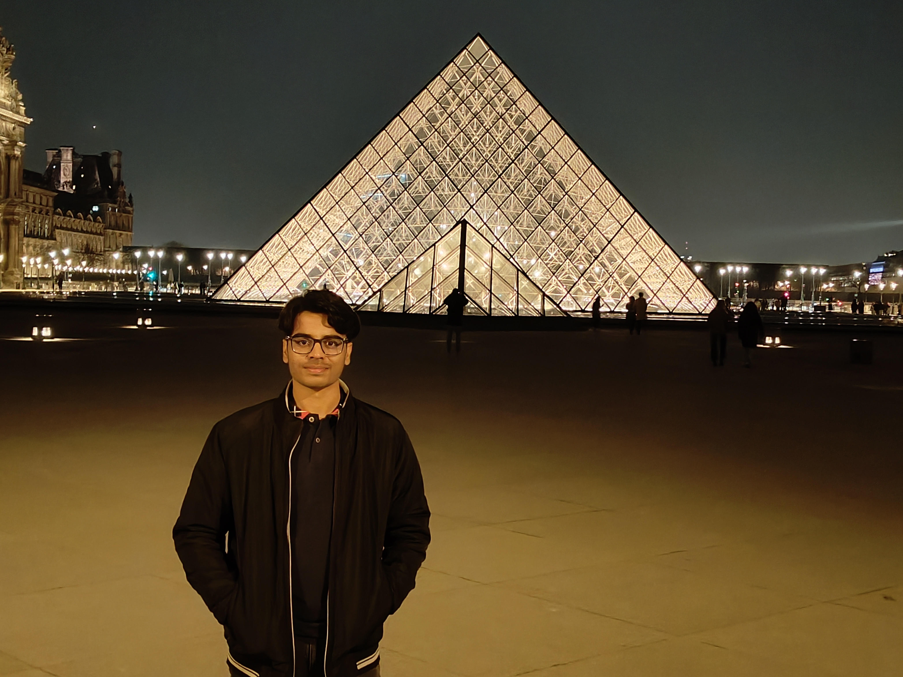

Vishal
Singh

I work at the intersection of machine learning and computational science, building physics-informed models, neural operators, and LLM-based systems to model and optimize complex phenomena across healthcare, engineering, and intelligent systems, bridging research and real-world deployment.
"Decisions Determine Destiny"
A mechanical engineer turned ML researcher.
I started with continuum mechanics and ended up training neural networks to solve PDEs. The bridge between physics and data is where I'm most at home.
B.E. in Mechanical Engineering from Thapar Institute of Engineering and Technology (CGPA 9.00/10), now Scientific ML Intern at NMCAD Lab, IISc Bengaluru. My research applies deep learning to aerospace, biomedical, and optimization problems — and I'm equally at home pushing a paper through review or shipping a Streamlit app for clinicians.
Foundation in rigor and curiosity.
Mechanical engineering taught me to model the physical world; the rest came from staying curious about how data could do it better.
B.E. — Mechanical Engineering
2021 — 2025Thapar Institute of Engineering & Technology, Patiala
- Graduated with B.E. in Mechanical Engineering — CGPA 9.00/10
- Top 10% of department; multiple merit scholarships
- Final-year capstone on a semi-autonomous water-cleaning robot
- NCC Air Wing Cadet (Nov 2022 — Oct 2023)
- Core team — SOMIE; organized MATLAB workshops 2022–2024
- Graphic Designer — Thapar Movie Club (5,000+ students)
- Student member — ASME
- Core team — Mechatronics & Robotics Club
Six missions across research labs and industry.
From CFD pipelines at IIT Delhi to surrogate models at JuliaHub — pick a mission to see the brief.
Research on auxetic metamaterials, fatigue crack growth prediction, and Industry 4.0 applications — using physics-informed neural networks and hybrid FEM-PINN solvers.
- Built FEM-PINN hybrid solver for fatigue crack growth analysis
- 3 journal papers + 2 conference papers published or submitted
- Presented work at ICESM 2025
Enhanced JuliaSimSurrogates for GUI deployment and optimized the Surrogatize.jl testing pipeline, cutting test time by 50%.
- Cut Surrogatize.jl test runtime from 3 hours down to 1.5 hours
- Integrated surrogate tuning into cloud workflows
- Polished JuliaSimSurrogates UI for GUI deployment
Built a video-generation framework using diffusion models, working under Samsung's Visual Intelligence team.
- Designed temporal consistency module for video diffusion
- Implemented lightweight UNet for faster generation
Explored PINNs, Neural Operators, KANs and PI-KANs applied to aerospace, biomedical and computational mechanics problems.
- First-author paper on PINNs for biomedical analysis
- Trained KANs on multi-physics simulation problems
- Received internal R&D grant for healthcare AI
Fully funded research developing FNO, DeepONet, and PINO models for porous media flow simulation.
- Trained FNO and PINO on 3D Darcy flow datasets
- Custom collocation loss for PINO training
- Published internal report on permeability prediction
Predicted boundary-layer thickness on LPT blades using FNO at 91% accuracy and built ANN models for aerodynamic coefficients.
- 91% accuracy with FNO on boundary-layer thickness
- Solver-free aerodynamic prediction pipeline
- Integrated CFD data into ML-ready format
Papers, patents and book chapters.
Mostly on physics-informed learning, neural operators and metamaterial design. A complete list lives on Google Scholar — selected highlights below.
Physics-Informed Neural Network for a 1D Solid Mechanics Problem
Singh, V., Harursampath, D., et al.
Modelling, 2024 — 5, 1532–1549
Detection of Structured False Data Injection in RL-Controlled Artificial Pancreas Systems
Vishal Singh, et al.
Submitted to IEEE Transactions on Industrial Informatics
Neural Optimization Machine for Auxetic Metamaterial Design
Vishal Singh, et al.
Submitted to Journal of Computational Science
Neural Optimization of Anti-Tetrachiral Auxetic Metastructures
Vishal Singh, et al. — Ongoing manuscript
KAN-Based Prognostics for Remaining Useful Life of Aircraft Engines
Vishal Singh, et al. — Ongoing manuscript
PINN for Glucose-Insulin Dynamics in Type-1 Diabetes
Vishal Singh, et al.
AICOMAS 2025 · Paris
Physics-Enhanced NN for Re-Entrant Auxetic Structures
Vishal Singh, et al.
MSML 2025 · Naples
Pseudo-Artificial Pancreas — AI-Based Insulin Dosage Recommendation
A low-cost decision-support system for Type-1 diabetes management.
Optimal Auxetic Metamaterial Structures — AI-Based Design Framework
Vishal Singh
I-4AM 2026, IISc / Springer (forthcoming)
Piezoelectric Auxetic Energy Harvesting Devices
Vishal Singh
I-4AM 2026, IISc / Springer (forthcoming)
Things I built and actually shipped.
Mostly research-adjacent — surrogate models, ML web apps, a robot. The kind of code that touches real users or real physics.
Breast Cancer Prediction Web App
Streamlit app reaching 97% accuracy on diagnostic data — logistic regression, radar-chart visualisation, modular deployment.
Jupiter Chatbot
A retrieval-augmented assistant for Jupiter.Money that answers questions grounded in their official services and policies.
Semi-Autonomous Water Cleaning Robot
ESP32 + BTS7960 river-cleaning robot with full ANSYS simulations of the propulsion system. Final-year capstone.
FNO — Porous Media Flow
Fourier Neural Operator capturing spatiotemporal dynamics of fluid flow across simulation conditions.
Apple Stock Prediction · GPR
Gaussian Process Regression with uncertainty quantification, custom feature engineering and hyperparameter tuning.
Glucose-Insulin PINN
Physics-informed network modeling Type-1 diabetes glucose dynamics — basis for the patent-pending pseudo-pancreas.
A handful of well-earned milestones.
Scholarships, fellowships, departmental ranks — markers along the way that keep the work honest.
Merit Scholarship III · 2023–24
INR 1,59,000 for top-10% rank in Mechanical Engineering at TIET.
MITACS Globalink Fellowship
Fully-funded summer research at École Polytechnique de Montréal, Canada.
Merit Scholarship III · 2022–23
INR 1,39,000 for top-10% rank in Mechanical Engineering at TIET.
3rd Rank — Mech Engg · 2022–23
Department-wide academic excellence certificate plus award.
Internal R&D Grant
Funded the early healthcare AI work that became the patent filing.
Multiple Paper Acceptances
MSML 2025, AICOMAS 2025, I-4AM 2026 — across journals and conferences.
Verified courses and formal stamps.
Coursework that closed gaps — Coursera, NPTEL, official issuer programs.
Channel is open.
Drop a signal — research collaborations, internships, or anything in the AI-for-science neighborhood.
vishalsinghforcv@email.com© 2026 Vishal Singh · Built with and code · v 3.0